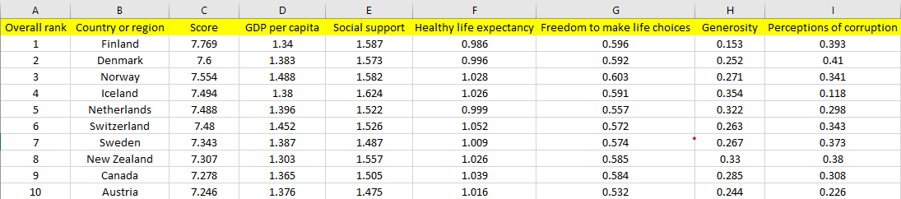

About this Project
This project delves into the factors influencing global happiness, using data from the World Happiness Report (2019) to analyze and visualize happiness trends across countries. The report ranks countries annually based on their citizens' overall well-being, and this project highlights key insights from the dataset to better understand the drivers of happiness.
Tech Stacks used:
- Html
- CSS
- R
- Quarto
Preview of the dataset

Data Visualizations
Visualization 1: Bar Chart of Top 15 Happiest Countries

Visualization 2: Scatter Plot of GDP per Capita vs Happiness

Key Insights
Insights from Visualization 1
- Finland- highest happiness score
- Denmark, Norway, and Iceland- very close rankings
- Non-European countries like New Zealand, Canada, Australia also feature
- Happiness scores- closely packed
Insights from Visualization 2
- Positive relationship between GDP per capita and happiness scores
- Fitted regression line- strong linear relationship between economic wealth (GDP per capita) and happiness
- Countries with lower GDP per capita still achieve relatively high happiness scores
- GDP per capita- significant role in explaining variations in happiness